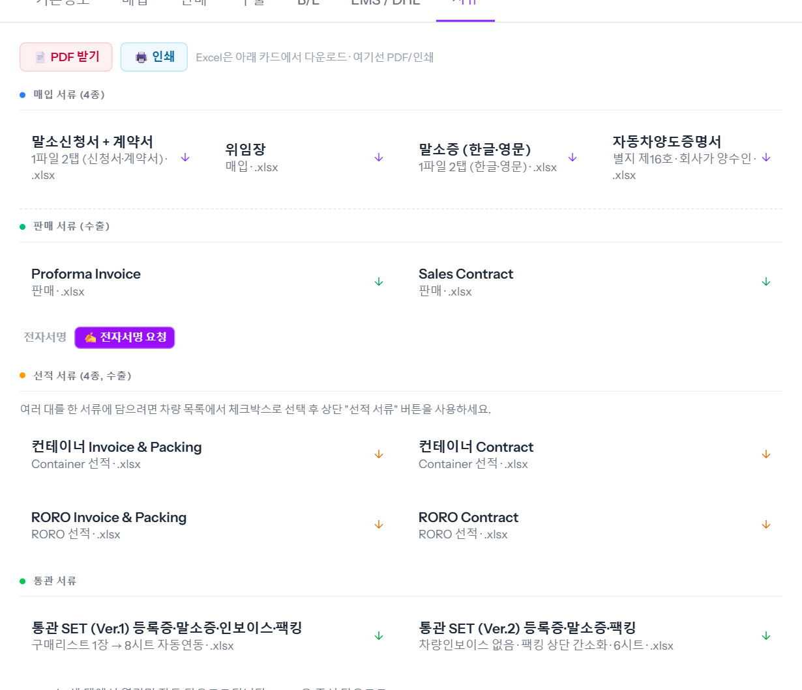
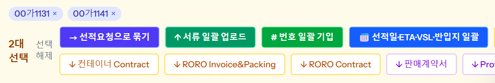

말소신청서 · 인보이스 · 판매계약서 · 선적 서류 · 통관 SET 을 차 정보로 채운 엑셀(xlsx)로 바로 받습니다. 한 대는 차 창의 「서류」 탭에서, 여러 대를 한 서류에 담으려면 차량 목록에서 차를 체크해 위 막대에서 받습니다. 예시 차량 00가1113 · 00가1131 · 00가1141.
카드를 누르면 그 차 정보가 채워진 엑셀이 바로 내려받아집니다(예: 「Invoice_00가1113_20261114.xlsx」, 「통관SET(Ver.1)_00가1113_20261114.xlsx」). 위 [PDF 받기] · [인쇄]는 PDF 로 받거나 바로 인쇄할 때 씁니다.

| 묶음 | 서류 | 쓰는 때 |
|---|---|---|
| 매입 서류 | 말소신청서 + 계약서 · 위임장 · 말소증(한글 · 영문) · 자동차양도증명서 | 매입 · 말소할 때 |
| 판매 서류 | Proforma Invoice · Sales Contract | 판매 등록 뒤 바이어에게 — 계약서는 전자서명도 받을 수 있습니다(씬 「판매계약서 전자서명」) |
| 선적 서류 | 컨테이너 · RORO × Invoice & Packing · Contract | 선적 방식에 맞는 것으로 |
| 통관 서류 | 통관 SET Ver.1(8시트, 구매리스트 1장 → 나머지 자동 연동) · Ver.2(6시트, 차량 인보이스 없음) | 수출신고 준비 |
체크한 차들이 위에 칩으로 쌓이고 막대가 나타납니다. 선적 서류 4종 · 판매계약서 · Proforma Invoice 를 누르면 체크한 차 전부가 한 서류에 들어갑니다(예: 「컨테이너_Invoice_Packing_2대_20261114.xlsx」). 한 서류에 최대 30대입니다.

※ 판매계약서 · Proforma Invoice 는 같은 바이어 · 같은 통화 차끼리만 묶입니다. 막대의 다른 버튼(선적일 일괄 · 번호 일괄 기입 · 서류 일괄 업로드)은 씬 「선적일·ETA·번호 일괄 기입」.